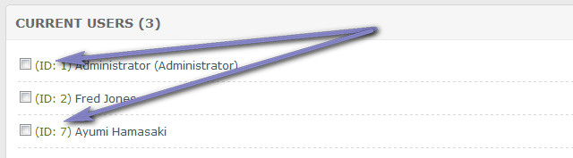

Documentation -


Documentation -

COMMERCIAL VERSION INCLUDES: - FREE upgrades for life - One time payment, NO subscriptions - ALL features unlocked and unlimited
Overview
The email digest is list of current open tickets/disputes, sent via email. Digest can be triggered via a cron and run as many times as needed to specified users.
Commercial Licence Required
The email digest is only available in the commercial version.
Email Digest Contents
The email digest transmits the following:
New open tickets - no responses
Open tickets awaiting admin response
Open tickets awaiting visitor response
New open disputes - no responses
Open disputes awaiting admin response
Open disputes awaiting visitor response
The name of the person who opened the ticket and the priority is also included. For disputes the count of many users are in the dispute is also included. You can also have a direct
link appear beneath each ticket which would take you straight to the ticket on login.
Note that users will only get information on tickets they have department access for. The administrative user receives all by default.
Enable/Disable Links
If enabled, adds a direct link beneath each ticket, which would take you straight to the ticket on admin login. This is dependant on 2 options being enabled:
In 'control/user-defined/defined2.inc.php' enable the links via:
EMAIL_DIGEST_LINKS (Set to 1 to enable)
The option to direct the user to the ticket must also be enabled. In the 'admin/control/user-defined/defined.inc.php' file, make sure the following is enabled:
REDIRECT_TO_TICKET_ON_LOGIN
If the links are enabled, but 'REDIRECT_TO_TICKET_ON_LOGIN' isn`t, the links will appear, but the user won`t be directed to the ticket.
Enable/Disable Mail For Zero Counts
By default, mail is always sent, even if there are no tickets and no disputes. If you prefer the system not to send emails if there are no tickets or disputes,
update the following in the 'the 'control/user-defined/defined2.inc.php' file.
EMAIL_DIGEST_ZERO_COUNT_MAIL (Set to 0 to disable)
E-Mail Template
The email template for the email digest is located at:
templates/language/english/email/email-digest.txt
You can remove any areas you don`t need.
Email Digest Cron
The email digest should be set up as a cron to run automatically. Your cron need to point to the 'email-digest.php' file in the root of your support system.
Some of the following may work as commands, but again, contact your host to check.
/usr/local/bin/php /home/admin/domains/yourdomain.co.uk/public_html/helpdesk/email-digest.php
php q /home/admin/domains/yourdomain.co.uk/public_html/helpdesk/email-digest.php
/usr/local/bin/php q /home/admin/domains/yourdomain.co.uk/public_html/helpdesk/email-digest.php
cmd /k C:\Windows\php\php.exe "C:\website\email-digest.php" (Windows)
To check the digest is working ok, you can also run it manually in any web browser.
Omit Users from Receiving Email Digest
If you wish you can omit users from receiving the email digest. Note that if their notification preference is disabled in admin, they won`t receive the digest anyway. However,
you may have a scenario where you want standard ticket notifications to be sent, but not the email digest.
To do this open the 'control/user-defined/defined2.inc.php' file and find the following:
OMIT_USERS_EMAIL_DIGEST
Enter ID number or comma delimited set for users you don`t want to receive the digest. You can get the ID numbers from the admin area:

Here are some example:
define('OMIT_USERS_EMAIL_DIGEST', '2'); // Blocks user 2 from receiving email digests
define('OMIT_USERS_EMAIL_DIGEST', '2,7'); // Blocks users 2 & 7 from receiving email digests
Cron Trigger Override
If the system fails when you setup the cron, and ioncube returns an error saying the system is "encoded for another domain", you can set up an override:
1: Create a new .php file in a text editor with the following code:
<?php
$ch = curl_init();
curl_setopt($ch, CURLOPT_URL, "http://www.yoursite.com/helpdesk/email-digest.php");
curl_setopt ($ch, CURLOPT_HEADER, 0);
curl_setopt($ch, CURLOPT_RETURNTRANSFER, 1);
$output = curl_exec($ch);
curl_close($ch);
?>
2: Make sure the url path points to your own 'email-digest.php' file. Save and upload alongside main index.php file.
3: Change your cron job in your control panel to access this new .php file. This will send a trigger to the 'email-digest.php' file.
NOTE: CURL must be installed for this to run.